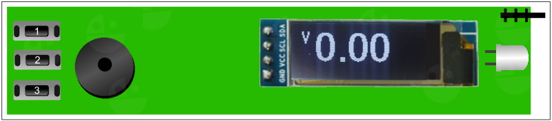

Обзор функций "народной" контрольки автоэлектрика
Оглавление
Главное меню
- описание главного меню контрольки
Коррекция напряжения
- исправляем проблемы отображения напряжения
Вольтметр
- описание функции вольтметр
Прозвонка
- описание функции прозвонка
Осцилограф
- описание функции осцилограф
Частотомер
- описание функции частотомер
Генератор
- описание функции генератор
Кан Лин Тест
- описание функции Кан Лин Тест
Таймер
- описание функции таймер
CRANK SENSOR
- описание функции датчик положения коленвала
Включение контрольки!
При включении контрольки нам показывается версия прошивки и играет мелодия. Также светит фонарик, фонарик сделан неотключаемым так как питание происходит от внешнего источника и для простоты конструкции.
Главное меню!
Включившись контролька показывает главное меню и если ничего не нажимать то через 3 секунды попадет в функцию вольтметр, но функции разберем ниже каждую отдельно, а сейчас разберемся с меню.
Всего у нас 7 основных функций, но у фунций есть настройки и режимы так что в общем функций побольше, чтоб зайти в функцю нажимаем кнопку 1 и движемся вправо по меню, если нажать кнопку 3 то двигаемся в обратную сторону, если остановится и подождать 3 секунды то "проваливаемся" в функцию.
Так же в главном меню существуют различные настройки.
 Если зажать и удерживать среднюю кнопку то перевернется экран, повторное зажатие перевернет экран обратно (это нужно для удобства работы ведь иногда приходится работать во всех немыслимых позах).
Если зажать и удерживать среднюю кнопку то перевернется экран, повторное зажатие перевернет экран обратно (это нужно для удобства работы ведь иногда приходится работать во всех немыслимых позах).
Если зажать и удерживать две кнопки 1 и 3 то включится тестовый генератор который выдает прямоугольные импульсы на иглу напряжением около 5 вольт, повторное зажатие выключает тестовый генератор (можно использовать не только для проверки осцилографа и частотометра но и для поиска необходимого провода в пучке и пр, если режим активирован то пропадает работа пищалки, если зайти в функции дпкв, таймер, кан лин тест, генератор то тестовый сигнал автоматически отключится).
Если зажать и удерживать кнопки 1 и 2 то отключается пищалка, повторное нажатие включает(во многих функциях есть звуковые оповещения и если работать с функцией продолжительное время писк может раздражать).
Если зажать и удерживать кнопки 2 и 3 то сменится полярность импульса во многих функцях, повторное зажатие изменит полярность обратно ( например в генераторе мы будем получать с иглы плюсовые импульсы вместо минусовых включенных по умолчанию, поговорим об этом моменте подробнее в функциях).
Коррекция напряжения
Если зажать в главном меню кнопку 3 то откроется коррекция напряжения для вольтметра с сохранением в ПЗУ, в этой функции мы можем подправить показания вольтметра если необходимо. Слева вверху на дисплее у нас вольтметр, справа вверху ADC(ацп на 7 пине) для настроек кан и пр. , внизу слева значение коррекции, может быть от 0 до 25, SAVE2 это просто чтоб не забывали сохранить кнопкой 2. После первой загрузке скетча значения коррекции могут быть большими около 255, это нормально так как в памяти епром куда мы будем сохранять изначально такое число. Кнопкой 3 выбираем значение и смотрим на показания вольтметра они должны быть около 4.3 вольта, далее для более точной настройки если нужно подключаем мультиметр к игле и корпусу юсб разьема, и корректируем снова 3 кнопкой чтоб показания сошлись на мультиметре и ардуино(на экране значение в вольтах нестабильно так как не обработано для большей скорости работы не обращайте внимания подстраивайте).
ПОСЛЕ НАСТРОЙКИ ОБЯЗАТЕЛЬНО НАЖМИТЕ КНОПКУ 2 ОНА СОХРАНИТ НАСТРОЙКИ В ПАМЯТЬ и вам не придется после отключения питания или перезагрузки вновь корректировать.
Вольтметр!
Функция и возможности.
Функция в которую переходит автоматически контролька после включения, это вольтметр(VOLTMETER).
В данной функции мы измеряем напряжение, производим прозвонку, можем подавать плюсовой сигнал куда либо и нагружать линию для проверки под нагрузкой минусом.
Измеряемое напряжение от 0 до 35 вольт так что можно работать не только с легковыми авто но и с грузовыми, при измерении напряжения около 5 вольт загорается светодиод TX на самой плате ардуино, а около 12 вольт загорится светодиод RX так же на ардуино.
Прозвонка
Для прозвонки в режиме вольтметр нажимаем 2 кнопку (еще одно нажатие на кнопку 2 отключит подачу плюса) и на экране загорается + слева в углу, так же появляется значение в вольтах подающеюся на иглу, сила тока на игле небольшая и если коснутся массы авто то напряжение просядет до нуля и раздастся писк бузера также начнет светится светодиод L на самой ардуино(функция прозвонка работает только на минус). Плюс появляющийся на игле в режиме прозвонки можно использовать для подачи на управление транзисторов катушек на датчики с аналоговым сигналом (датчик температуры, датчик дроссельной заслонки и т.д только используйте с эбу которые на 5 вольт опорного напряжения, а не на 3.3 вольта).Проверка под нагрузкой включается и выключается кнопкой 3 производится подключением к измеряемой точке резистора на 100 ом который подлючен на массу что позволяет отсеять вероятность что на проводе наводка тока или плохой контакт или управляющий сигнал, а не питание(ВНИМАНИЕ ИСПОЛЬЗУЙТЕ КРАТКОВРЕМЕННО ФУНКЦИЮ НАГРУЗКИ ПОДАВАЯ ПЛЮС НА ИГЛУ В ЭТОМ РЕЖИМЕ РЕЗИСТОР НАГРУЗКИ ГРЕЕТСЯ).
При включенном плюсе нажимая подключить нагрузку плюс автоматически отключается и наоборот.
Осцилограф!
Функция и возможности.
Главная фишка контрольки это осцилограф(OSCILLOSCOPE), он находится сразу после вольтметра в меню.
В данной функции в графическом виде мы видим сигнал который меняется в реальном времени, что позволяет видеть сигналы различных датчиков например сигнал датчика холла распредвала или сигнал индуктивного датчика коленвала.
2 кнопкой в ссцилографе можем выбрать диапазоны 5, 15, 25, 35 вольт что позволяет видеть как слабый сигнал так и сигналы с большой амплитудой, при выборе диапазона на экране мы увидим напряжение во всю высоту экрана, например у нас пятивольтовый сигнал с датчика распредвала мы выбираем 5 вольт и видим сигнал во весь экран, каких либо еще измерений сигнала в осцилографе нет чтоб не перегружать микроконтроллер.
Сейчас на осцилографе мы видим тестовый сигнал частотой 35 герц и скважностью 50%, данный тестовый сигнал включается в главном меню зажатием кнопок 1 и 3. С помощью включения теста можно проверить работоспособность осцилографа а так же можно попробовать увидеть искажение сигнала (я еще не придумал для чего :) )
3 кнопкой на осцилографе включается подтяжка 5 вольт на иглу(на самом деле около 4.5 вольта), данная настройка позволяет увидеть минусовые импульсы на осцилографе(например шим блок вентилятора охлаждения выдает 12 вольт со слабой силой тока на мозги двигателя, а мозги просаживают эти 12 вольт на массу, но если блок неисправен или отключен то мы можем не увидеть импульсов и включив подтяжку мы увидим минусовые импульсы).
Возможно потом добавлю еще возможностей функции осцилограф, например для отображения медленных сигналов и пр..
Частотомер!
Функция и возможности.
Частотомер (FREQUENCE) та функция которая создает много вопросов о том зачем она вообще нужна.
Функция измеряет частоту и скважность(ШИМ) сигнала, в диапазоне от 30 герц до 30 килогец и скважность от 0 до 100%, на фото мы видим под буквами PWM скважность сигнала, а под Hz частоту, в функции нет каких либо настроек.
Данная функция предназначена для измерения сигналов блоков управления с ШИМ (широтно импульсная модуляция)например вентиляторами охлаждения двигателя, салонными вентиляторами, обогрев сидений и пр., датчиков передающих информацию по шим сигналу или частотному сигналу например датчики давления фреона, а так же управляющих сигналов различных клапанов, заслонок, например клапанов фазорегуляторов и пр.
На рисунке сейчас мы видим параметры тестового генератора который включается в главном меню зажатием кнопок 1 и 3, как видно скважность у нас 49 процентов и частота 35 герц.
После того как мы узнали параметры сигнала мы можем эмулировать сигнал в следующей функции под названием генератор.
Генератор!
Функция и возможности.
Генератор ШИМ это четвертая функция в контрольке, данная функция позволяет генерировать прямоугольные импульсы с частотой 30 - 2000 герц и скважностью от 1 до 100%, на фото мы видим значение PWM это скважности сигнала, а Hz это частота сигнала.
Генератор ШИМ сигнала предназначен для проверок блоков вентиляторов управляемых по ШИМ сигналу, блоков ШИМ бензонасосов, эмуляции сигнала ШИМ для датчиков фреона и пр. При индикации минуса на фото после надписи PWM сигнал с генератора идет минусом, то есть мы подключаемся к сигнальному проводу на котором обычно 12 вольт со слабой силой тока и генератор просаживает своим минусом сигнальный плюс, от этого мозги двигателя или шим блок понимают что есть сигнал и производят действие, ЩИМ блок включает вентилятор, а мозги видят давление фреона если мы эмулируем датчик фреона. Если после PWM мы видим значек плюс + то значит сигнал идет с генератора плюсовой, переключить полярность сигнала мы можем в главном меню зажатием кнопок 2 и 3, плюсовой сигнал у нас слабый 5 вольт и 8 милиампер он годится для эмуляции датчиков у которых нет напряжения на управляющем проводе, подачи сигнала в провод для поиска в жгуте проводов и пр.
В функции генератор ШИМ мы можем 2 кнопкой настраивать скважность сигнала однократное нажатие увеличивает скважность на еденицу, а удержание кнопки 2 сразу на 5 что позволяет выставить любую скважность в пределах 100.
Кнопка 3 в функции генератор настраивает значение частоты, однократное нажатие добавляет 10 герц, удержание 3 кнопки накидывает сразу по 100 герц.
В генераторе 2 и 3 кнопкой одновременно мы можем подлючать постоянный плюс на иглу для просадки минусом, на дисплее мы видим что добавился плюс, данная фукция пригодится для теста генератора, так же импульсы получаются обратные то есть шим как бы отзеркален и импульсы более четкие чем чисто на плюсовом шиме, возможно пригодится, а возможно и нет но пусть будет. При выходе из генератора подтяжка плюса снимается.
Минусовые ипульсы идут через резистор 100 ом чтобы случайно не было замыкания если вы ткнулись на плюсовой провод.
Кан Лин Тест!
Функция и возможности.
Самая "сырая" функция контрольки это Кан Лин Тест, она предназначена для определения на кан шине провода CAN H и CAN L, а так же лин шины (LIN). Пока на данный момент высокоскоростная шина кан определяется хорошо, низкоскоростная не тестировалась и не настраивалось ее определение. Шина лин тоже определяется, но ее легко спутать с обычным проводом питания так как контролька их не раличит. Настроек каких либо в функции нет, так что кнопка работает только 1 - выход. По функции еще предстоит работа, возможно вы ее переделаете во что то стоящее ведь проект народный, открытый и каждый может внести свою лепту в его развитие.
Сейчас на дисплее мы видим ожидание поступления сигнала.
При подключении на провод витой пары высокоскоростной кан шины мы видим на дисплее его обозначение, например сейчас на дисплее провод определился как CAN-low то есть низкоуровневый.
 А второй провод определился как высокоуровневый CAN-high.
А второй провод определился как высокоуровневый CAN-high.
Теперь мы видим что определилась лин шина.
Данная функция востребована различными установщиками сигнализаций, эмуляторов и прочего доп. оборудования, так же функция может помочь при ремонте кан, лин шины. Скоро планирую сделать определение низкоскоростного кан.
Таймер!
Функция и возможности.
Функция таймер в основном предназначена для автоэлектриков которые работают один на один с машиной, таких по моему большинство. В функции мы можем управлять длятельностью паузы(бездействия) и длительностью импульса (подключением минуса либо плюса на иглу), это позволяет включать и выключать что либо что пригождается в поиске неисправности. Например мы можем кратковременно включать гудок автомобиля подавая минус с контрольки на реле гудка и не попасть в ситуацию что например мы в яме нашли неконтакт и гудок воет без остановки дожидаясь пока мы вылезем и отключим, можем мигать фонарями подключив так же к реле, а то бывает непонятно где стопы где габариты, а где противотуманка, включать бензонасос на время и пр.
На дисплее мы видим вверху слева время импульса, справа вверху время ожидания, снизу дисплея минус(-) показывает что импульс идет минусовой (минусовой импульс более мощный им можно включить реле), далее режимы если идет пауза то пишется WAIT (ожидание) и IMPYLS (подача импульса).
Кнопкой 2 настраивается время паузы оно может достигать 98 секунд, а кнопкой 3 время импульса оно тоже может достигать 98 секунд, после набора максимального значения значение обнуляется, при длительном удерживании кнопки 2 или 3 идет быстрый набор значения.
На дисплее внизу сейчас высвечивается плюс(+), это означает что идет плюсовой сигнал (плюсовой сигнал у нас слабый им можно запитать светодиод, подать сигнал на эбу, включить транзистор и пр.). Переключение полярности сигнала находится в главном меню где зажатием кнопок 2 и 3 мы можем менять плюс на минус.
CRANK SENSOR!
Функция и возможности.
Функция эмулятор датчика положения коленвала (CRANK SENSOR) позволяет имитировать сигнал датчика коленвала многих автомобилей, так как в функции можно менять количество зубьев и количество пропусков на шкиве коленвала. Например многие ЭБУ Bosch и его клоны (Январь, Микас и пр.) используют схему 60 импульсов из которых 2 пропуска (данная схема настроена по умолчанию 58 импульсов и 2 пропуска). В автомобилях часто встречаются 2 типа сигнала дпкв это прямоугольные импульсы (датчики холла) и синусоида (индукционные датчики), прямоугольные импульсы выдает генератор в контрольке, а в синусоиду придется дополнительно преобразовать сигнал (хотя некоторые ЭБУ понимают оба типа сигнала), дя преобразования есть много схемок в интернете они очень простые и требуют 2-3 детали, протестирую потом и размещу что работает хорошо.
На экране сейчас мы видим слева вверху значение импульсов(PIP), а справа вверху значение пропусков(POP), внизу слева у нас режим изменения (TUNE) значений если он один снизу то значения можно менять, если еще есть надпись PULSE то идет цикл который имитирует 20 оборотов коленвала (в нем контролька блокируется), далее пройдя 20 оборотов мы можем менять значения кнопкой 2 и 3 или выйти из функции кнопкой 1. Если снизу справа высвечивается минус (-) то импульсы идут минусовые.
Кнопкой 2 настраивается количество импульсов оно может достигать 98, а кнопкой 3 количество пропусков оно тоже может достигать 98, после набора максимального значения значение обнуляется, при длительном удерживании кнопки 2 или 3 идет быстрый набор значения.
На дисплее внизу сейчас высвечивается плюс(+), это означает что идет плюсовой сигнал. Переключение полярности сигнала находится в главном меню где зажатием кнопок 2 и 3 мы можем менять плюс на минус.